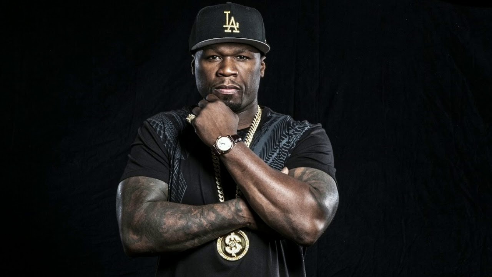

50 Cent
Кёртис Дже́ймс Дже́ксон III (родился 6 июля 1976), больше известный под своим сценическим псевдонимом 50 Cent — американский рэпер. Известность пришла к нему с выпуском альбомов Get Rich or Die Tryin' (англ. Разбогатей или Сдохни) и The Massacre (англ. Резня). 50 Cent добился мультиплатинового успеха с обоими альбомами, продав более 21 миллиона копий по всему миру.
Рождённый в районе Южная Ямайка, Куинс в Нью-Йорке, 50 Cent начал торговать наркотиками в возрасте двенадцати лет во время крэк-эпидемии 1980-х. После того, как он бросает торговлю наркотиками, чтобы посвятить себя карьере рэпера, в него стреляют 9 раз в 2000 году. После выхода его микстэйпа Guess Who's Back?, 50 Cent’a замечает Eminem и подписывает с ним контракт в Interscope Records. С помощью Эминема и Dr. Dre, которые продюсировали его первый главный коммерческий успех, он становится одним из самых продаваемых рэперов во всём мире. В 2003 он основывает лейбл G-Unit Records, который подписывал контракты с такими артистами, как Young Buck, Lloyd Banks и Tony Yayo. 50 Cent имел много стычек с другими рэперами, включая Ja Rule, Game и Fat Joe.
Популярные песни:
Candy Shop
Just A Lil Bit
You Don't Know
In Da Club
Ayo Technology